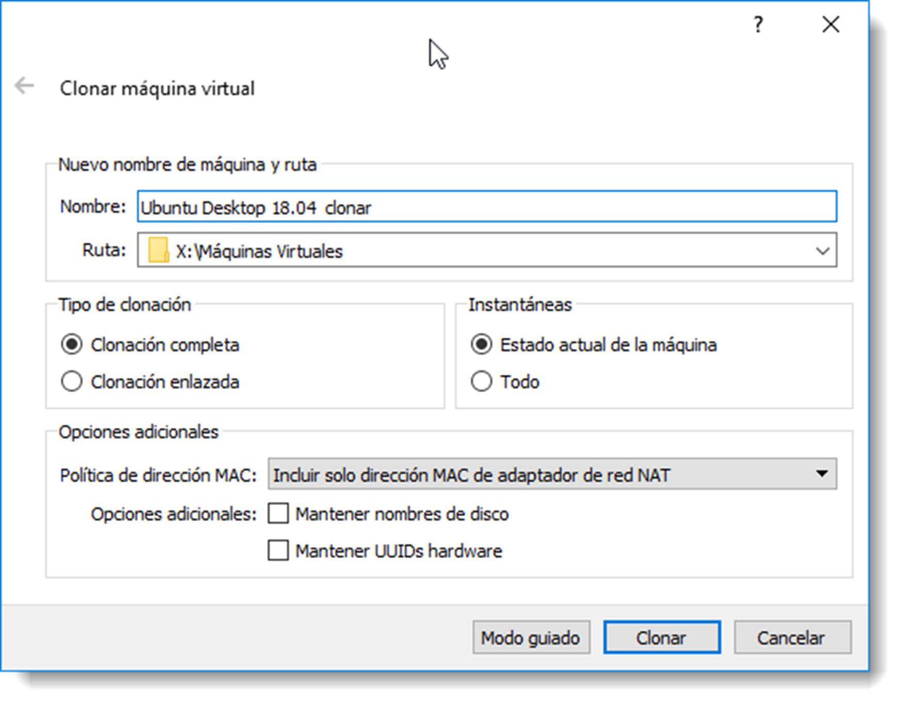

Instalación de sistemas operativos.¶
Requisitos y configuración previa¶
Una de las primera tareas que se deben realizar para la instalación de un sistema operativo, es confirmar que efectivamente se puede instalar. Para ello es necesario comprobar los requisitos mínimos de hardware que se deben cumplir para que el sistema operativo se instale y funcione correctamente.
A continuación se detallan los principales requisitos a revisar:
- Requerimientos en la velocidad del procesador.
- Cantidad de memoria principal.
- CHIPSET de la placa base.
- Es muy importante comprobar que el fabricante del hardware dispone de los controladores para la versión del sistema operativo. La inexistencia de ellos no impide la instalación, pero afectará al rendimiento general del ordenador.
- Arquitectura del procesador. Un procesador con una arquitectura de 32 bits será incapaz de manejar un sistema operativo de una arquitectura diferente. Además, en la medida de lo posible se ha de elegir la arquitectura de 64 bits para contener los sistemas operativos, ya que la anterior posee ciertas limitaciones que supondrían un lastre en el sistema.
En la actualidad, la instalación de un sistema operativo es un proceso completamente guiado y trivial, por lo que no se ahondará mucho en este proceso. Será con posterioridad cuando se configuren muchos de los aspectos que se han configurado de forma automática. Pero antes será necesario realizar ciertas comprobaciones:
- Revisar la compatibilidad y requerimientos del hardware.
- Arrancar el ordenador con el medio extraíble conectado y la BIOS debidamente configurada.
- Iniciar el asistente de instalación que guiará el proceso de instalación.
- Asignar particiones de forma adecuada a los discos duros, proceso que se realizará de forma automática en este apartado.
- Tras la copia de ficheros, realizar configuraciones iniciales en cada sistema operativo.
No existen muchas diferencias entre el proceso de instalación de un sistema operativo cliente y uno de red, al menos en sistemas operativos de Microsoft. Por lo que respecta a distribuciones basadas en GNU/Linux usadas en este manual, sí existen algunas diferencias entre instalar un sistema operativo cliente o uno de red. Las diferencias se ilustran en el siguiente apartado.
Instalación de Ubuntu Server¶
El proceso de instalación de Ubuntu Server no es muy diferente del de Ubuntu Desktop pero al contrario que éste, necesita instalar ciertas características que todavía no se ha tratado. Por este motivo se realizará una pequeña guía de instalación destacando las configuraciones que son requeridas durante el proceso y propias de un servicio de directorio, como el servicio de DNS:
- Tras elegir el idioma y configuración del teclado, procederá a detectar el hardware del sistema y configurarlo, entre ellos, los dispositivos de red. Turno para la configuración predeterminada de red y el nombre de la máquina.
- Turno de los usuarios. Configurará un usuario para usar en lugar de la cuenta de superusuario. El asistente es autoexplicativo: nombre del usuario, nombre de la cuenta, contraseña, ubicación y cifrado de la cuenta.
- La instalación seguirá con el particionado del disco y la copia de ficheros en el disco duro. Como de costumbre, ofrecerá un particionado automático y otro manual. En cada ocasión se procederá según requerimientos.
- Una vez copiados los datos, se descargarán las actualizaciones necesarias, se configurará el gestor de paquetes así como las actualizaciones del sistema operativo. En el siguiente paso es dónde se encuentra la diferencia a la que se hacía referencia. Ubuntu Server permite instalar diferentes servicios durante el proceso de instalación del sistema operativo. Se seleccionará la opción “Herramientas estándar del sistema” y se instalarán los servicios necesarios de forma manual a medida que sean necesarios tras la instalación.

La instalación de Microsoft Windows Server no ofrece esta posibilidad, siendo con posterioridad cuando el SOR sea promocionado a servidor y dotado de estas herramientas, tema que se abordará en la unidad de trabajo número 5.
Herramientas de virtualización¶
Para el estudio de los contenidos que se detallan es este punto será necesario la instalación, en cada sistema operativo contenido en una máquina virtual, la herramienta Oracle Guest Additions.
Para instalarla, una vez arrancada la máquina virtual, se accede al menú → . Tras esto se deberá instalar el software en la máquina huésped como si de un programa normal se tratase (claro dependiendo que sistema operativo sea). Al acabar, y tras reiniciar el sistema virtualizado, ya se dispondrá de las opciones de compartición que se especifican en este apartado.
Dispositivos USB¶
Otra forma rápida de compartir ficheros es el uso de dispositivos de almacenamiento USB. Conseguiremos conectar un dispositivo USB a la máquina virtual siguiendo estos pasos:
- conecta el USB a la máquina anfitrión.
- en la máquina huésped → y aparecerá un listado de los dispositivos que se encuentran conectados.
- pulsamos sobre alguno de ellos, el control de éste pasará a manos de la máquina virtual.
- para liberar el dispositivo USB, pulsamos sobre el dispositivo que queramos liberar, el anfitrión retomará el control sobre él.
Hay que tener en cuenta que esta acción desconectará la el dispositivo USB de la máquina anfitrión. Si en ese momento existe algún fichero abierto en él, es posible la pérdida de información. Esta situación se repite cuando queremos liberar el dispositivo desde la máquina huésped.
Arrastrar y soltar¶
Oracle VirtualBox permite con este método arrastrar archivos entre anfitrión-cliente como si de una carpeta se tratase. Para habilitarlo hay que ir al menú a Dispositivos → Arrastrar y soltar. Se puede elegir el sentido de la copia de ficheros, desactivarlo o configurarlos como bidireccional.

Portapapeles¶
También es posible compartir el portapapeles entre los sistemas anfitrión-huésped a través del menú → . De igual forma que en el caso anterior, es posible configurar la dirección o deshabilitar esta característica.
En definitiva, se dispone de muchas opciones para compartir ficheros entre la máquina anfitrión y el huésped. A todas las vistas en este apartado hay que añadir los recursos compartidos de red. Elegir una de ellas dependerá de la necesidades de cada ocasión y también de las preferencias del usuario.
Herramientas avanzadas¶
Este apartado no pretende ser exhaustivo, ya que la explicación de todas las posibilidades que ofrece una herramienta como Oracle VirtualBox excede de las pretensiones de este manual. Sí que se trata de acciones comunes que todo usuario debe conocer para optimizar su trabajo.
Instantáneas¶
Las instantáneas, también conocidas como snapshots, permiten al usuario realizar una copia del estado actual de la máquina para poder regresar a él con posterioridad. Esta opción es útil cuando se necesita realizar una instalación de software crítico, alguna configuración del sistema o alguna otra acción que ponga en peligro la estabilidad del sistema operativo.
Antes de proceder a esta acción, es conveniente realizar una instantánea para guardar el estado actual del sistema. A partir de este punto, todos los cambios que se realicen quedarán guardados en un disco duro virtual diferencial. Una vez acabado la acción crítica sobre el sistema, éste podrá volver a un estado anterior y comenzar una nueva línea de tiempo, si así se requiere.
Recomendación
Es importante trabajar con instantáneas dureante las prácticas para poder vovler a un punto de configuración deseado.

Cuando Oracle VirtualBox realiza una instantánea las guarda en la pestaña de Instantáneas de cada máquina virtual. Es posible realizarlas tanto con la máquina corriendo como apagada y muy recomendable que escribamos un comentario del motivo por el cual realizamos la instantánea. Pasados unos días será difícil recordar el porqué se hizo esa snapshot.
Si es necesario la recuperación de una de ellas, tan sólo habrá que pulsar el botón derecho sobre ella y seleccionar la opción del menú emergente.
Atajos de teclado¶
Existen combinaciones de teclas especiales para cada sistema operativo. Cuando se realizan estas combinaciones, siempre son captadas por el anfitrión, dejando sin posibilidad de reacción al huésped. Por ejemplo, si pulsamos la combinación Alt+Crtl+Supr con una máquina huésped abierta, no será ésta la que muestre el administrador de tareas, sino el anfitrión. Para enviar ordenes mediante combinación de teclas especiales al huésped es posible realizarla de dos formas:
- a través del menú
- mediante una combinación de teclas alternativa, todas los huéspedes tienen una tecla especial denominada tecla anfitrión que nos brinda otra forma de interactuar con ella. En el ejemplo anterior, si es necesario abrir el administrador de tareas en el huésped, se realizará pulsando la tecla anfitrión+Supr . Por defecto,Oracle VM VirtualBox establece que la tecla anfitrión es Ctrl Derecho. A través del menú → → se habilitará un editor para poder cambiar tanto la tecla anfitrión como sus combinaciones.
Clonar una máquina virtual¶
Clonar una máquina es crear una copia de un huésped exactamente igual a la clonada con la salvedad de sus números de identificación (UUID) diferentes. De esta forma ambas máquinas podrán ser ejecutadas dentro del mismo entorno. Es una práctica recomendable que, tras acabar la instalación e instalar las Guess Additions, se realice una clon de la máquina para disponer de una copia limpia por si ocurriera algún desastre. Es importante tener en cuenta que el huésped clonado siempre debe permanecer apagado hasta que termine el proceso.
Existe un asistente de clonado en que se deberá indicar el nombre de la nueva máquina, si se quiere cambiar la MAC de los dispositivos de red (importante, hay que recordar que no pueden haber dos tarjetas de red con la misma dirección física dentro del sistema), así como si se desea clonar tan sólo el estado actual de la máquina o con todas sus instantáneas.
Además de estas opciones, es importante la selección del tipo de clonación que mejor se adapte a las necesidades del proyecto:
- completa, crea una copia de todos los archivos de la máquina virtual junto con todos sus discos duros.
- enlazada, crea una copia de todos los archivos de la máquina virtual pero no de los discos duros. En su lugar genera un nuevo disco duro diferencial donde almacena los cambios que se producen sobre el estado inicial de la máquina clonada. En este estado, el nuevo huésped es dependiente de la máquina original y no podrá funcionar sin ella. Este método ahorra espacio en el disco duro pero aumenta las dependencias entre dispositivos virtuales.

Una vez seleccionadas todas las opciones, pulsando el botón Clonar obtendremos una nueva máquina idéntica a la inicial.
Exportación e importación de máquinas virtuales¶
Este método es valido cuando queremos trasladar alguna máquina huésped de un equipo a otro e incluso de un software de virtualización diferente de dónde fue creado. Para ello se dispone de un estándar abierto para empaquetar y distribuir servicios virtualizados denominado Open Virtualization Format (OVF). Al tratarse de un estándar abierto no está vinculado a ninguna arquitectura de procesador en concreto. La unidad de empaquetado y distribución se denomina paquete OVF y puede contener uno o más sistemas virtuales, cada uno de los cuales se puede implementar en una máquina virtual distinta.
Para realizar estas acciones, para las cuales las máquinas y/o servicios virtualizados deben estar apagados, es necesario ir al → y seguir el asistente que aparece.
Cifrado de máquinas virtuales¶
Oracle VM VirtualBox ofrece una opción para cifrar las máquinas virtuales que contengan información sensible. En concreto cifrará el archivo de disco o discos duros que del que el sistema virtualizado disponga. A través del menú → → se puede activar el cifrado de la máquina virtual.
Se utilizará un algoritmo de cifrado simétrico AES de 128 o 256 bits. Tras insertar la contraseña comenzará el proceso de cifrado. Es posible revertir esta operación si se desmarca la opción
El cifrado del disco duro virtual permitirá que tan sólo la máquina que lo ha cifrado pueda usarlo, a menos que, al configurarlo en otro huésped, introduzcamos la contraseña de cifrado. Esto evita que el disco virtual pueda conectarse a otras máquinas sin el consentimiento del administrador del sistema.
Se ha de tener en cuenta que, al menos hasta la versión 5.1 de Oracle VM VirtualBox, es necesario instalar el Oracle VirtualBox Extension Pack para tener disponible la opción de cifrado. Este paquete es descargable desde su página oficial. Además de esta característica ofrece la posibilidad de cambiar el controlador de los dispositivos USB virtuales de la versión 1.0 a la 2.0 o 3.0, con el significativo aumento de rendimiento, el uso de la webcam del anfitrión y el VirtualBox RDP (Remote Desktop Protocol) entre otras funcionalidades.
Son muchas las características que ofrece este software de virtualización, aunque conocerlas todas no es el objetivo de este manual. Conociendo las herramientas descritas en esta unidad, el trabajo del del resto del manual se realizará sin complicaciones.